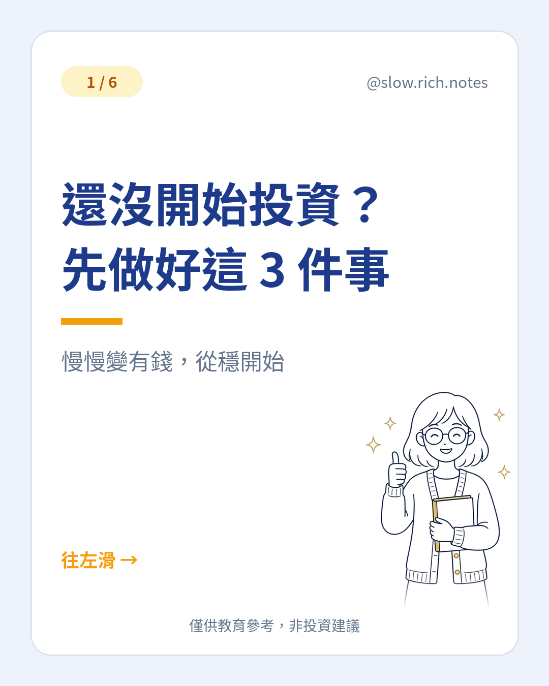
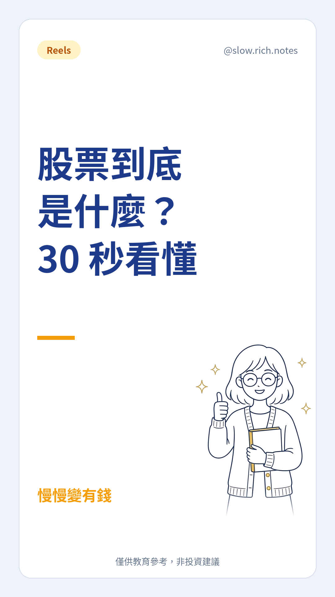
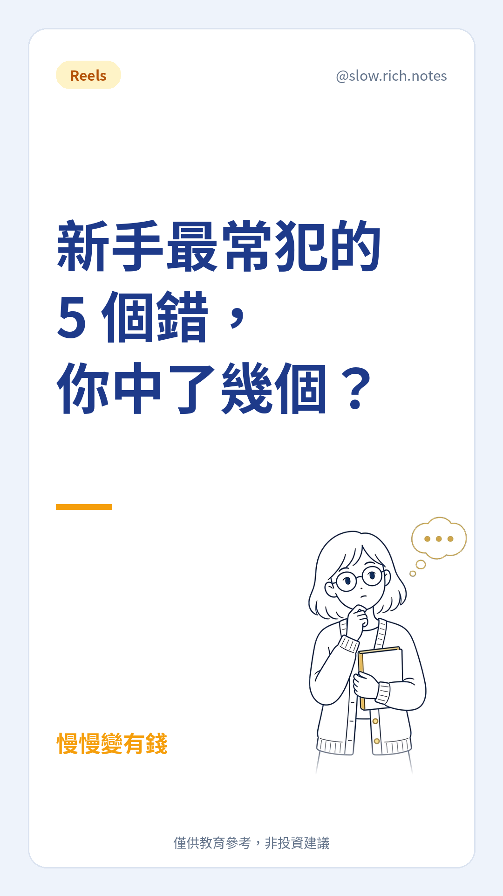
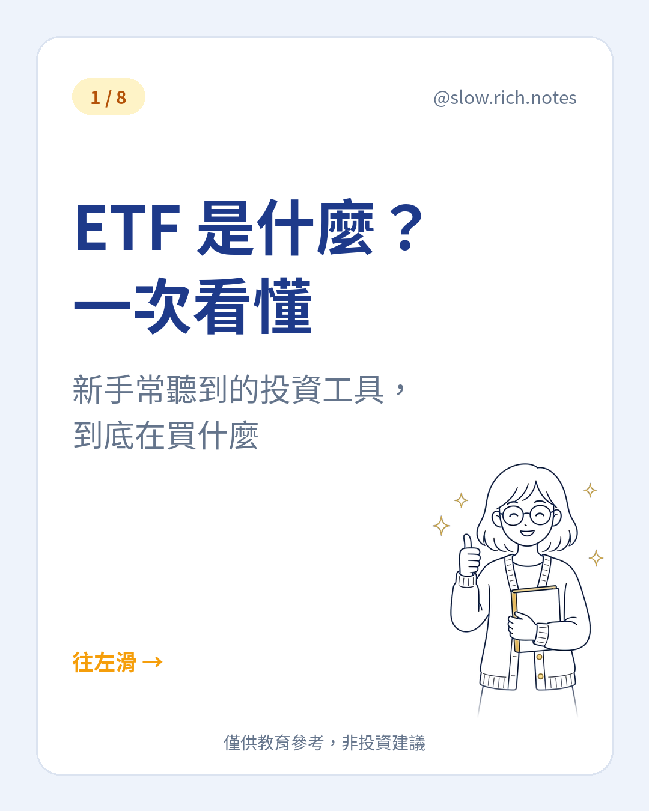
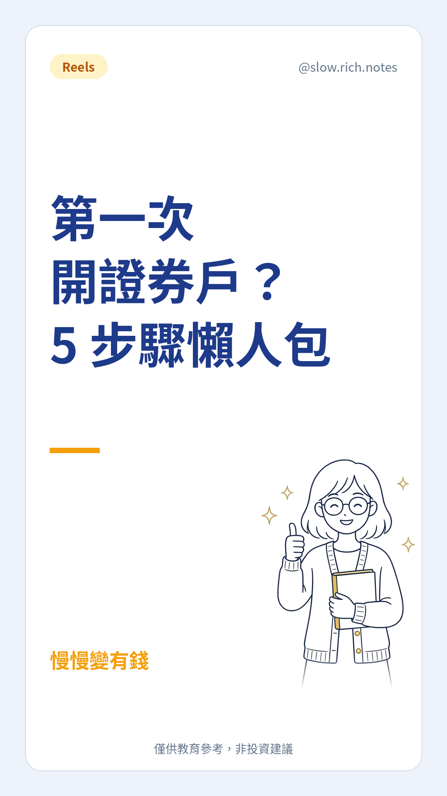

筆記
把 IG 圖文寫成可以慢慢讀的短文。觀念為主，不報明牌。
 現金流
現金流月薪 3 萬，也能慢慢存起來
發薪後餘額歸零，常常不是只差收入。用月薪 3 萬的假設例子，把錢分成生活、緊急預備、還債與保障、未來自己。
閱讀 → 一人公司
一人公司不用面試，先把員工下載下來
一人公司也可以先把工作拆開。工具像一份可複製的工作說明書，不會替你負責；跟理財一樣，先把系統建起來。
閱讀 → 新聞
新聞油價破 100，你的薪水正在縮水？
油價、通膨、利率、股與債常常連成一條線。看懂是為了少慌，不是為了猜下一根漲跌。便當價格是假設例子。
閱讀 →
起步還沒開始投資？先做好這 3 件事
先別急著選標的。緊急預備金、高利率負債、這筆錢什麼時候要用，這三件有著落，再學怎麼投資。
閱讀 → 名詞
名詞看不懂財經新聞？這 10 個詞先學起來
股票、債券、ETF、基金、股利、殖利率、本益比、市值、分散、波動。先用白話卡住，再判斷新聞在說什麼。
閱讀 → 方法
方法定期定額 vs 單筆投入，新手該怎麼想？
一種把進場時間拆開，一種讓錢比較早開始工作。兩種都不保證賺錢，重點是你能不能長期做下去。
閱讀 →
觀念股票到底是什麼？
股票是公司所有權的一小塊。公司賺錢時股東可能分到股利，大家看壞時股價也會跌，風險要一起算。
閱讀 → 觀念
觀念複利：時間是新手最大的優勢
賺到的部分若留在裡面，才會繼續滾。同樣的本金，差常常在時間；報酬不會每年都剛好一樣。
閱讀 →
心態新手最常犯的 5 個錯，你中了幾個？
聽明牌、追高殺低、用生活費去投資、全部押在一處、只看報酬不看風險和成本。先少踩坑，再談技巧。
閱讀 →
工具ETF 是什麼？一次看懂
ETF 是一籃子股票或債券。它能降低單一公司的衝擊，避不開整個市場下跌，也要看內扣費用。本篇不推薦任何標的。
閱讀 →
起步第一次開證券戶？5 步驟懶人包
選券商、準備證件、線上開戶、弄懂交割帳戶、先模擬再小額。各家流程不同，本篇不推薦任何券商。
閱讀 → 心態
心態投資前，先問自己這 5 個問題
預備金、這筆錢五年內用不用、跌兩成能否不賣、是否說得出自己在買什麼、多久看一次。有一題卡住就先補。
閱讀 →✔ 開始投資前該知道的 10 件事
✔ 12 個新手名詞小抄
✔ 白話說明，零基礎也看得懂